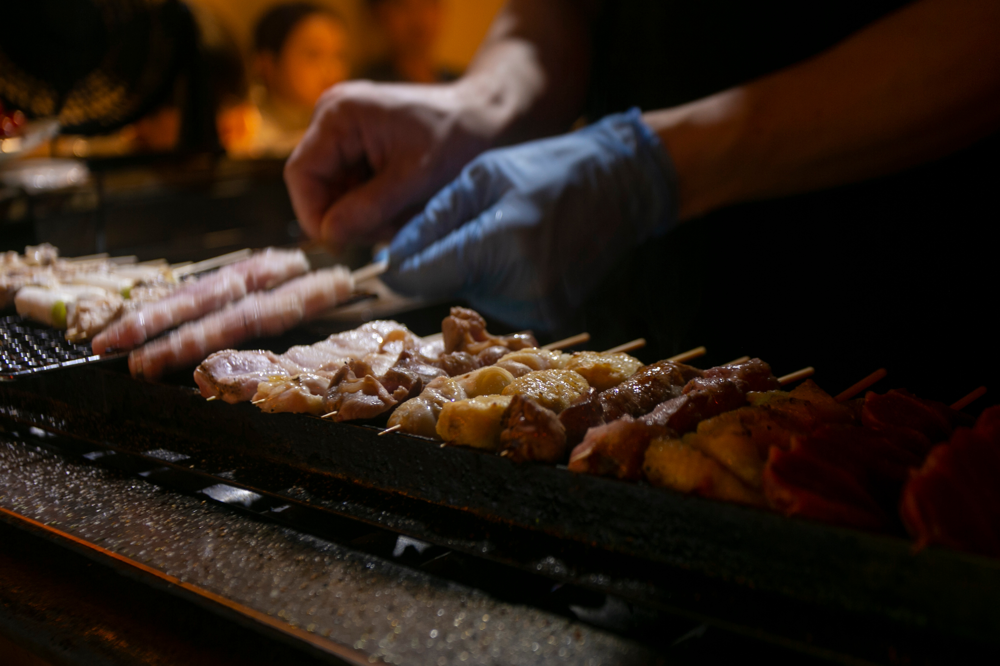
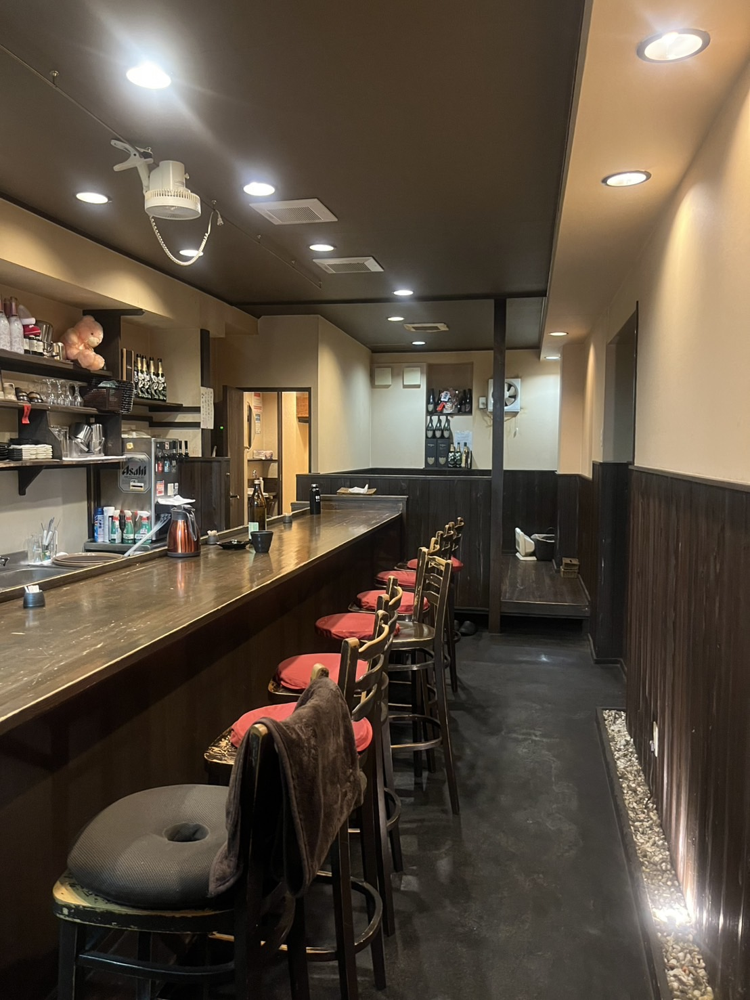
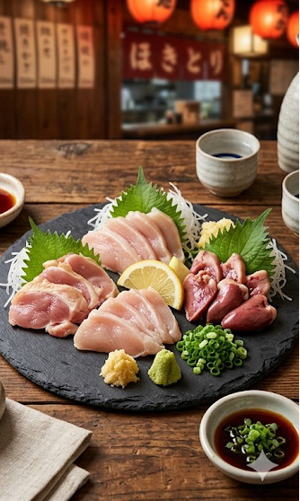
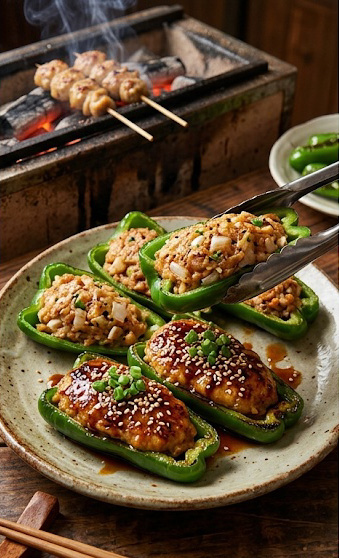
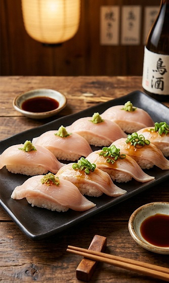

堺で愛されて15年
母と子で営む、小さな「止まり木」
お知らせ
News
- 2026年3月3日
- 本日は臨時休業します！すみません！
- 2026年4月4日
- 新酒入荷しました！
- 2026年5月5日
- 本日貸切です！すみません！
当店について
About us

堺で愛されて15年
母と子で営む、小さな「止まり木」
堺の街に暖簾を掲げて15年。
「あーちゃん」は、気さくな母子で切り盛りするアットホームな焼鳥屋です。
駅から少し離れた場所にありますが、扉を開ければそこは我が家のような安心感。
近所の方々がふらっと立ち寄り、笑い声が絶えない——
そんな気取らない時間を大切にしています。
初めての方も、ぜひ「ただいま」の気持ちでお越しください。

ふっくら、ジューシー
溶岩プレートが引き出す「鶏の真髄」
当店の自慢は、焼鳥屋では珍しい「溶岩プレート」で焼き上げるスタイル。
溶岩石の持つ遠赤外線効果で、鶏肉の表面はパリッと香ばしく、中は驚くほどふっくらジューシーに仕上がります。
プレートの無数の気泡が余分な脂を吸収するため、煙が少なくヘルシーに楽しめるのも特徴。
15年守り続けてきたこの味を、温かな接客とともに心ゆくまでお楽しみください。
おすすめ
Recommend

鳥の造り盛り
常連さんイチオシの鶏の造り盛りは、ササミ、ズリ、心、肝です。
海鮮のお刺身は数あれど、鶏のお刺身盛りは珍しい！

つくね生ピーマン
焼いたつくねを、ご自身でお好きな量を生のピーマンに詰めて召し上がれ！
ピーマンが苦手な方も、うなる美味しさ！

ささみの握り
サッと湯通しささみをお寿司スタイルでご提供します！
ササミの造りをお寿司にしたら美味しいのでは？と常連さんのアイデアで生まれた人気メニュー！
店舗情報
Store Information
- 営業時間
- １７：００〜２３：００
- 定休日
- 毎週水曜日、第３火曜日
- 座席数
- カウンター席 7席、お座敷 総収容人数24人
- クレジットカード
- 現金のみです
- お子様づれ
- 大歓迎！お子様用食器あり
- 予約
- お電話にてご予約を承っております
アクセス
Access
- 住所
- 〒599-8254
大阪府堺市中区伏尾３５９番地角谷マンション１階 - 電話番号
- 072ー279ー1112